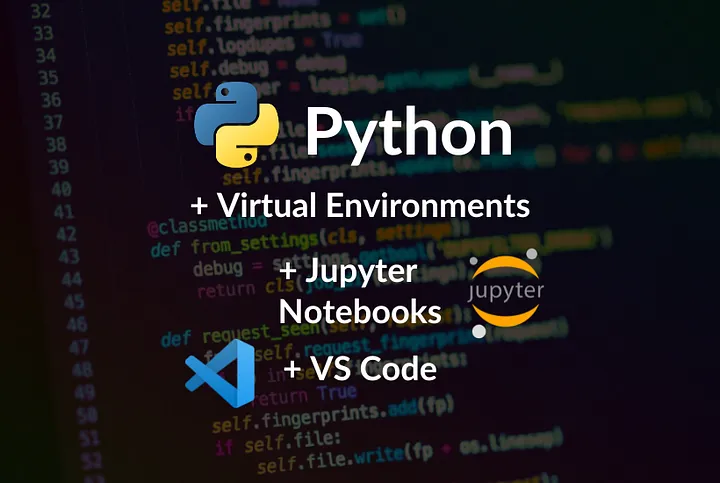
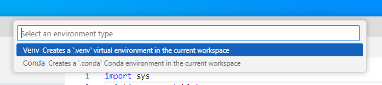

1 Setting up your environment with VS Code
1.1 Learning Objectives
Setting up your Python data science environment is the foundation for all your work in this course. A well-configured setup will save you time, prevent errors, and make your workflow smoother. Whether you’re new to VS Code or Python, these steps will help you build a reliable environment for coding, analysis, and reproducibility.
By the end of this chapter, you will be able to:
- Install and configure Visual Studio Code (VS Code) for Python and Jupyter Notebooks.
- Create and manage a virtual environment for this course.
- Install essential Python libraries for data science.
- Verify that your environment is working properly.
1.2 Why Choose Visual Studio Code (VS Code)?
Choosing the right editor can make a big difference in your productivity and learning experience. VS Code is a top choice for data science and Python development because it combines power, flexibility, and ease of use.
Free and Lightweight
VS Code is free, open-source, and runs efficiently on most systems without being resource-heavy.Cross-Platform
Works consistently on Windows, macOS, and Linux.Rich Python Support
With the official Python extension, you get:- Syntax highlighting and IntelliSense (auto-completion, code hints).
- Built-in debugging tools.
- Easy integration with virtual environments and Jupyter Notebooks.
- Syntax highlighting and IntelliSense (auto-completion, code hints).
Integrated Jupyter Notebook Support
You can open and run.ipynbnotebooks directly in VS Code.Customizable and Extensible
Large marketplace of extensions (e.g., formatting, linting, Git, Docker, AI tools).Version Control Integration
Built-in Git and GitHub support for managing and sharing code.Unified Workflow
One place for editing, running, debugging, documenting, and version-controlling Python code.
Whether you’re just starting out or working on advanced projects, VS Code provides a modern, unified environment for all your coding needs.
1.3 Quick Start: Setting Up Python & VS Code
VS Code is a versatile editor. To use it for data science, you’ll complete a few extra setup steps (e.g., Python & Jupyter extensions). Follow this step-by-step setup guide to get started quickly and avoid common pitfalls.
Step 1: Install Python
- Download and install the latest version from python.org.
- On Windows, check the box
Add Python to PATH.
This makes Python available in your terminal.
Step 2: Install VS Code & Extensions
- Download VS Code from code.visualstudio.com.
- Open VS Code, go to the Extensions panel (
Ctrl+Shift+X), and install:- Python (Microsoft)
- Jupyter (Microsoft)
Step 3: Create a Course Folder
- Make a folder for your notebooks (e.g.,
datascion Desktop or Documents). - Open this folder in VS Code.
Step 4: Create Your First Notebook
In VS Code, go to File → New File → Save as →
test.ipynb.Add a code cell:
print("hello world")Run the cell. VS Code may prompt you to select or create a Python environment.

:If prompted, create a new environment using the GUI (recommended for beginners).
Make sure the kernel (top right) shows .venv (Python 3.xx.x).
✅ If you see
hello worldprinted, your setup is working!
If everything works, you can skip the Full Setup below.
❌ If you run into issues, continue with the detailed setup and troubleshooting steps in the next section.
This quick start helps you get coding fast, but the full setup ensures your environment is robust and reproducible for all course projects.
1.4 Full Setup: Reliable Python Environment in VS Code
If the quick start didn’t work, or you want a more robust setup, follow these step-by-step instructions to ensure your Python environment is reproducible and ready for data science.
Step 1: Install Python
Go to the official Python website and download the latest version for your operating system.
Important: During installation, check the box
Add Python to PATH
so Python is available in your terminal.After installation, restart your terminal in VS Code.
Verify installation by running:
python --versionYou should see the installed Python version.
Step 2: Install VS Code Extensions
- Open VS Code.
- Go to Extensions (
Ctrl+Shift+X). - Install:
- Python (by Microsoft)
- Jupyter (by Microsoft)
Step 3: Set Up Your Workspace
- Create a new folder for your course work (e.g.,
STAT303-1on Desktop or Documents). - Open the folder in VS Code (
File > Open Folder).
Step 4: Create a Notebook for Your Work
In VS Code, go to
File > New Fileand selectJupyter Notebook.Save the file as
your_notebook.ipynb.Add a code cell:
print("hello world")Make sure to select the
.venvkernel for your notebook (see next step).
Step 5A: Create a Virtual Environment (GUI Method)
- Run the cell. If prompted, create a Python environment using
venvin the current workspace. - Wait for Jupyter to start and install necessary components (e.g., ipykernel).
- After installation, ensure the selected kernel in the top right of the notebook says .venv (Python 3.xx.x).
- If not, select the
.venvkernel manually.
If you successfully created the environment using the GUI, skip Step 5B.
Step 5B: Create a Virtual Environment (Command Line Method)
- If not prompted to create your environment, use the terminal:
Open the terminal in VS Code.
Run:
python -m venv .venvActivate the environment:
On Windows:
.\.venv\Scripts\activateOn macOS/Linux:
source .venv/bin/activate
You should see
(.venv)at the start of your terminal prompt.Install essential packages:
pip install numpy pandas matplotlib
Step 6: Verify Your Setup
Run the code cell again. You should see
hello worldprinted out.In the terminal, check your Python version and installed packages:
python --version pip list
Troubleshooting Tips
- If the kernel does not show
.venv, restart VS Code and ensure the environment is activated. - Make sure the Python and Jupyter extensions are installed and enabled.
- If you see errors, check that your notebook is saved with the
.ipynbextension and the correct kernel is selected.
A reliable environment is essential for reproducible data science. These steps will help you avoid common issues and set yourself up for success throughout the course.
1.5 Jupyter Notebooks in VS Code
After setting up your environment, you can take full advantage of Jupyter Notebooks directly in VS Code. This integration lets you:
- Create, edit, and run
.ipynbnotebooks without leaving VS Code - Use interactive code cells for data analysis, visualization, and documentation
- Access rich outputs (plots, tables, markdown) inline with your code
- Switch kernels to use different Python environments for each notebook
- Debug, refactor, and version-control your notebooks with built-in tools
Getting Started:
- Open or create a notebook file (
.ipynb) in VS Code - Make sure the correct Python kernel/environment is selected (top right corner)
- Add code and markdown cells as needed
- Run cells individually or all at once
Learn More:
- Explore the official guide: Jupyter Notebooks in VS Code
Jupyter Notebooks in VS Code provide a powerful, flexible workflow for data science and Python development.
1.6 Rendering notebook as HTML using Quarto
Quarto is designed for high-quality, customizable, and publishable outputs, making it suitable for reports, blogs, or presentations. We’ll use Quarto to print the **.ipynb* file as HTML for your assignment submission.
1.6.1 Installing and Verifying Quarto
Download and install Quarto from the official website.
Follow the installation instructions for your operating system.
Open your terminal within VS Code:
- Go to
Terminal->New Terminal.
- Go to
Run the following command to verify that Quarto and its dependencies are correctly installed:
quarto --versionYou should see the installed quarto version. If the command line doesn’t work, you might see an error message like:
- `quarto is not recognized` - `quarto command is not found`This issue is often caused by Quarto not being added to the PATH environment variable. Similar to how you added the Python path to the environment variable above, you need to add the Quarto path to the system environment variable so that the command can be recognized by your operating system’s shell.
On Windows, if you used the default installation path (without changing it), Quarto is installed in:
C:\Users\<USER>\AppData\Local\Programs\Quarto\bin
Note:
Before moving forward, ensure that the command quarto --version successfully prints the version of your installed quarto. If it does not, you may need to troubleshoot your quarto installation or add it to the PATH environment variable.
1.6.2 Converting the Notebook to HTML
Check the procedure for rendering a notebook as HTML here. You have several options to format the file. Here are some points to remember when using Quarto to render your notebook as HTML:
The
Raw NBConvertcell type is used to render different code formats into HTML or LaTeX. This information is stored in the notebook metadata and converted appropriately. Use this cell type to put the desired formatting settings for the HTML file.In the formatting settings, remember to use the setting
embed-resources: true. This will ensure that the rendered HTML file is self-contained, and is not dependent on other files. This is especially important when you are sending the HTML file to someone, or uploading it somewhere. If the file is self-contained, then you can send the file by itself without having to attach the dependent files with it.
Once you have entered the desired formatting setting in the Raw NBConver cell, you are ready to render the notebook to HTML. Open the terminal, navigate to the directory containing the notebook (.ipynb file), and use the command: quarto render filename.ipynb --to html.
1.7 Independent Study
Goal: Get hands-on experience creating a reproducible Python environment using pip and .venv in VS Code.
1.7.1 Step-by-Step Instructions
Step 1: Create Your Workspace
Make a folder named
STAT303_1for your course work.Open this folder in VS Code.
Create a new notebook:
setup_test.ipynb.Add a code cell:
print("Hello, VS Code & .venv!")Run the cell. If prompted, create/select a Python environment (choose
.venv).
Step 2: Create the .venv Environment
If VS Code does not prompt you, open the terminal in VS Code.
Run:
python -m venv .venvActivate the environment:
.\.venv\Scripts\activateInstall essential packages:
pip install numpy pandas matplotlib
Step 3: Verify Environment Consistency
In the terminal, check your Python version:
python --versionIn the notebook, run:
import sys print(sys.executable)Make sure the Python path in the notebook matches the one in your terminal. This confirms you are using the same environment.
Step 4: Generate html from the notebook using Quarto
In the terminal, make sure you are in the directory that contains your notebook
quarto render setup_test.ipynb --to htmlMake sure the html file was generated in the same directory
Troubleshooting Tips
If you run into issues (e.g., kernel not showing .venv, code cell errors):
- Restart VS Code.
- Deactivate/reactivate
.venv. - Make sure Python & Jupyter extensions are installed.
- Save your notebook with the
.ipynbextension. - If the kernel is missing, use the kernel picker (top right) to select
.venv. - If you see an error like
No such file or directory
orNo valid input files passed to render
:- Check your current location:
- macOS / Linux:
pwd
- Windows:
cd
- macOS / Linux:
- List files in the current directory:
- macOS / Linux:
ls
- Windows:
dir
- macOS / Linux:
- If the notebook isn’t there:
- Use
cdto move into the correct folder, or
- Provide the full (absolute) path to the file.
- Use
- Check your current location:
Extra:
- Try installing a package (e.g.,
seaborn) and import it in a new cell to test. - Practice switching kernels to see how environments affect your code.
- Practice creating a
.condaenv and usecondato install theseabornpackage